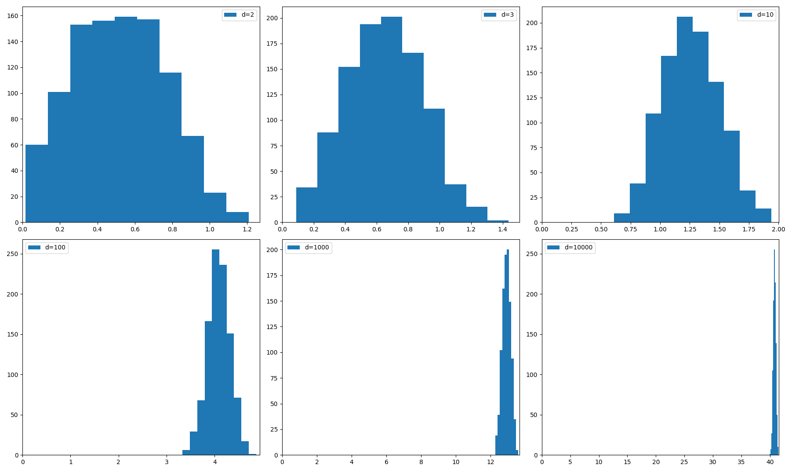
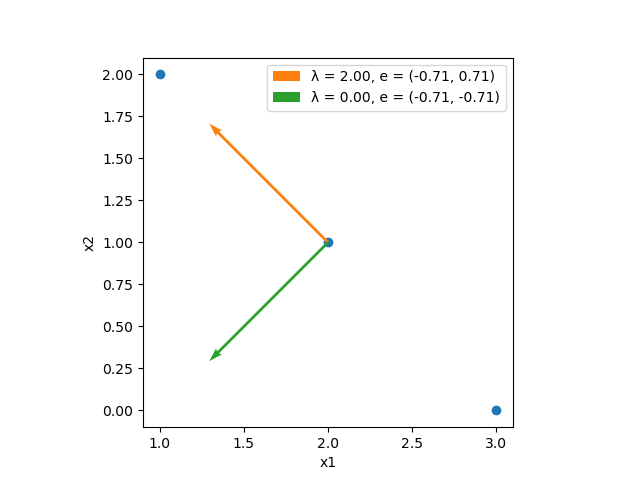
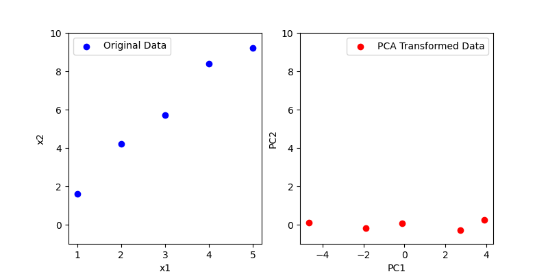
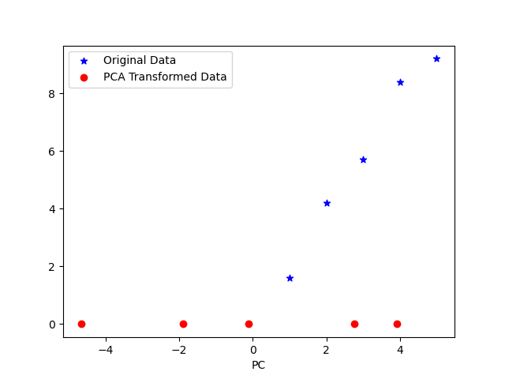
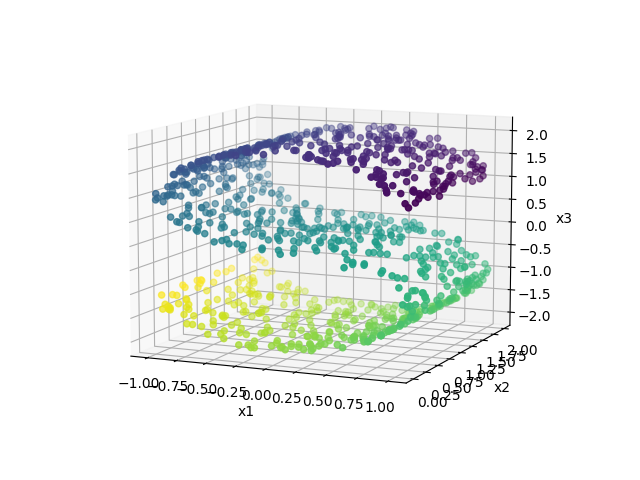
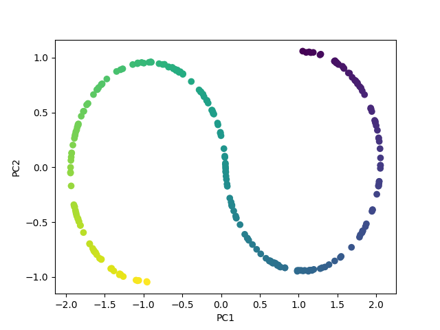
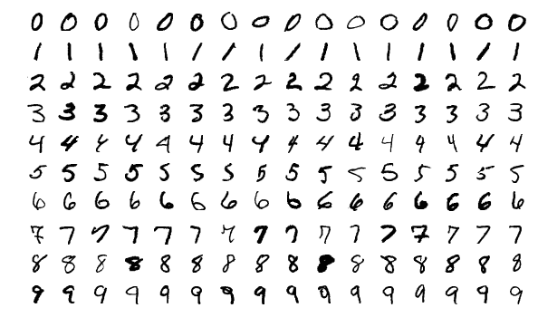
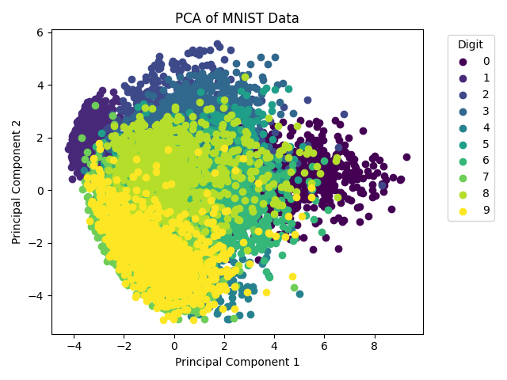
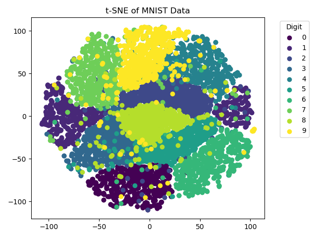

Dimensjonsreduksjon: PCA og t-SNE
Når dataene har hundrevis av features, kan vi verken se dem eller stole på avstandene i dem. Her lærer du to måter å presse dataene ned i få dimensjoner på: PCA, som finner de lineære retningene med mest varians, og t-SNE, som flytter punkter rundt til nabolagene ligner på originalen.
Etter dette kapittelet skal du kunne
- forklare hvorfor vi reduserer dimensjoner (visualisering, støyfjerning, feature discovery) og at det er både preprosessering og analyse
- regne ut kovarians, kovariansmatrise, egenverdier og egenvektorer for et 2×2-eksempel med enkel kalkulator
- forklare hva det betyr at «hovedkomponentene er egenvektorene til kovariansmatrisen», og hvorfor de er ortogonale
- regne ut forklart varians-andel og avgjøre hvor mange komponenter som trengs
- bruke PCA riktig i sklearn (fit på trening, transform på test, skaler først) og forklare hvorfor PCA til 2D feiler på MNIST
- beskrive SNE og t-SNE: betingede sannsynligheter, KL-divergens, t-fordelingens tunge haler og perplexity
- forklare hvorfor t-SNE ikke kan brukes på nye data, og hva du ikke kan lese ut av et t-SNE-plott
- sammenligne PCA og t-SNE langs mål, gjenbrukbarhet, feature-generering, linearitet og beregningskostnad
12.1Hvorfor redusere dimensjoner?
I kapittel 11 så vi at avstander oppfører seg rart i høye dimensjoner. Trekker du to tilfeldige punkter i en $d$-dimensjonal enhetskube, blir avstanden mellom dem stor, mens spredningen i avstandene blir liten sammenlignet med middelverdien. Alle punkter havner omtrent like langt fra hverandre. Dette kalles concentration of distances, og det er en del av dimensjonsforbannelsen (kapittel 4).

Konsekvensen er at metoder som bygger på avstand, som k-means og DBSCAN, slutter å fungere. Flere datapunkter hjelper ikke, fordi problemet ligger i geometrien og ikke i datamengden. Det vi kan gjøre, er å redusere antall dimensjoner og bare beholde retningene som faktisk bærer struktur.
Dimensjonsreduksjon (dimensionality reduction) er uveiledet læring som tar data med $n$ features og lager en representasjon med $n' \lt n$ features, slik at mest mulig av informasjonen bevares. Hva «informasjon» betyr, avhenger av metoden: for PCA er det varians, for t-SNE er det nabolag.
Forelesningsnotatene gir tre grunner til å gjøre dette:
- Datavisualisering. Vi kan bare plotte 2 eller 3 dimensjoner. Mønstre som klynger og anomalier er dessuten ofte usynlige i høye dimensjoner på grunn av dimensjonsforbannelsen.
- Støyfjerning. Hvis vi bare beholder de nye featurene (extracted features) som fanger variansen eller strukturen best, filtrerer vi bort retninger som stort sett er støy. Det kan gi mer robuste og mer tolkbare modeller.
- Feature discovery. Metoder som finner struktur som overlever dimensjonsreduksjonen, gir færre, sammensatte features med den viktigste informasjonen. Det hjelper oss å forstå dataene, og de blir billigere å lagre og analysere.
Dimensjonsreduksjon kan altså være et preprosesseringssteg, for eksempel før clustering, og det kan være en analyse i seg selv, for eksempel når vi plotter dataene i 2D for å se hvor mange klynger det finnes.
Ikke bland sammen feature selection (velge ut noen av de opprinnelige kolonnene, slik vi droppet «Name» i Titanic) og dimensjonsreduksjon med PCA (lage nye kolonner som er kombinasjoner av alle de gamle). PCA er feature extraction, ikke selection.
Hvilke av disse er gode grunner til å redusere dimensjonaliteten til et datasett?
- Å kunne visualisere dataene i 2D eller 3D
- Å gi modellen flere features å lære av, slik at den kan fange mer informasjon
- Å filtrere bort retninger som mest inneholder støy
- Å finne færre, sammensatte features som oppsummerer den viktigste informasjonen
- Å gjøre dataene lineært separerbare, slik at en lineær klassifikator alltid får 100 % accuracy
Du skal kjøre k-means på et datasett med 500 features, og klyngene blir dårlige. En medstudent foreslår å samle inn ti ganger så mye data. En annen foreslår å kjøre PCA ned til 20 komponenter først. Hvem har best argument?
- Den første, fordi k-means alltid blir bedre med flere datapunkter
- Den andre, fordi problemet er at avstander konsentreres i høye dimensjoner, og det løses ikke av flere punkter
- Ingen av dem. k-means er immun mot dimensjonsforbannelsen fordi den bruker gjennomsnitt
- Den første, fordi PCA fjerner informasjon og derfor alltid gir dårligere klynger
12.2PCA: intuisjonen
Principal component analysis (PCA, hovedkomponentanalyse) ble utviklet av Karl Pearson i 1901, lenge før kunstig intelligens fantes som fag. Ideen er enkel: finn de aksene i datarommet som maksimerer variansen. Disse aksene kalles hovedkomponenter (principal components, PC).
- Hver hovedkomponent er en lineær kombinasjon av de opprinnelige featurene, for eksempel $z_1 = 0.45\,x_1 + 0.89\,x_2$.
- Hovedkomponentene er ortogonale (står vinkelrett på hverandre).
- De er sortert: PC1 har mest varians, PC2 nest mest, og så videre.
Høyde, vekt og alder
Tenk deg et datasett med høyde, vekt og alder for en gruppe mennesker. Featurene er korrelerte: høye mennesker veier mer, og veldig unge mennesker er både lavere og lettere. PCA finner de uavhengige retningene der dataene varierer mest:
- PC1 er retningen med mest varians. Her vil den trolig være en slags «størrelse» der høyde, vekt og (for barn) alder øker sammen. Den bærer mesteparten av informasjonen.
- PC2 har nest mest varians og står vinkelrett på PC1. Den kan for eksempel skille folk som er tunge for høyden sin fra folk som er lette for høyden.
- PC3 tar resten av variansen og står vinkelrett på både PC1 og PC2.
At komponentene er ortogonale, er en garanti for at de inneholder ulik informasjon. PC2 skal forklare en ny del av variansen som PC1 ikke allerede har tatt. Hvis PC2 hadde pekt delvis i samme retning som PC1, ville de to delt på den samme variasjonen, og vi hadde lagret noe dobbelt. Projeksjonene på ulike PC-er er dermed ukorrelerte.
2025 del 7.1 spurte om hensikten med at komponentene er ortogonale. Riktig svar var at hver komponent forklarer en ulik del av variansen uten overlappende informasjon. Feilsvarene var at de skal fange like mye varians, være mest mulig korrelerte, eller kode redundant informasjon.
PCA er å finne den beste kameravinkelen. Du skal ta ett bilde (2D) av en 3D-sky av punkter. Fra én vinkel ser alt ut som en klump. Fra en annen ser du at skyen er en lang pølse. PCA velger vinkelen der skyen ser bredest ut, altså der mest av variasjonen synes. Neste akse er den bredeste retningen av det som er igjen, vinkelrett på den første.
Prøv selv. Under ser du en sky av korrelerte punkter. Drei aksen og se hvor stor variansen til projeksjonene blir. Vinkelen der variansen er størst, er PC1.
Hva er en hovedkomponent i PCA?
- Den av de opprinnelige featurene som har størst varians
- En ikke-lineær transformasjon av featurene som maksimerer separasjonen mellom klasser
- En retning (akse) som er en lineær kombinasjon av de opprinnelige featurene
- Det datapunktet som ligger nærmest gjennomsnittet
PC2 tvinges til å stå vinkelrett på PC1. Hva er den viktigste konsekvensen?
- PC2 får like mye varians som PC1
- Projeksjonene på PC1 og PC2 er ukorrelerte, så PC2 beskriver variasjon som PC1 ikke allerede har fanget
- PC2 blir den retningen der variansen er størst
- PC1 og PC2 blir mest mulig korrelerte, slik at de sammen gir et robust estimat
I eksempelet med høyde, vekt og alder: Hvorfor tror du PC1 ville vært en kombinasjon av alle tre, og ikke bare «vekt»? Hva ville skjedd med PC1 hvis vekt var målt i gram i stedet for kilo?
12.3Kovarians og kovariansmatrisen
Notatene sier at «PC-ene er egenvektorene til dataenes kovariansmatrise». For å forstå den setningen trenger vi to byggeklosser: kovarians og egenvektorer. Vi tar kovarians først.
Kovarians
Kovariansen måler om to features varierer sammen:
Kovarians mellom feature $x_i$ og $x_j$ over $N$ datapunkter (likning 105 i notatene)
$$\operatorname{cov}(x_i, x_j) = \frac{1}{N-1}\sum_{k=1}^{N} (x_{i,k}-\bar{x}_i)(x_{j,k}-\bar{x}_j)$$- Først sentrerer vi: trekker fra gjennomsnittet, slik at hver feature har middelverdi 0.
- For hvert datapunkt ganger vi avvikene sammen. Er begge over snittet (eller begge under), blir produktet positivt. Er det ene over og det andre under, blir det negativt.
- Til slutt tar vi et slags gjennomsnitt, men deler på $N-1$ i stedet for $N$.
Vi bruker $\bar{x}$, som er beregnet fra de samme dataene. Avvikene fra $\bar{x}$ er i snitt litt mindre enn avvikene fra den sanne (ukjente) middelverdien, fordi $\bar{x}$ per konstruksjon ligger midt i akkurat disse punktene. Å dele på $N-1$ korrigerer for dette og gir et forventningsrett estimat. Det er også det np.cov gjør som standard. På eksamen: bruk $N-1$ når formelen står slik, og vær konsekvent.
| Fortegn på $\operatorname{cov}(x_i,x_j)$ | Betydning | Eksempel |
|---|---|---|
| positiv | de øker sammen | høyde og vekt |
| negativ | når den ene øker, minker den andre | $x_1=(1,2,3)$, $x_2=(2,1,0)$ |
| ≈ 0 | ingen lineær samvariasjon | skostørrelse og fødselsmåned |
Kovariansmatrisen
Med to features samler vi alle fire kovariansene i en 2×2-matrise:
Kovariansmatrisen (likning 106)
$$S = \begin{pmatrix} \operatorname{cov}(x_1,x_1) & \operatorname{cov}(x_1,x_2) \\ \operatorname{cov}(x_2,x_1) & \operatorname{cov}(x_2,x_2) \end{pmatrix}$$- Diagonalen er variansene: $\operatorname{cov}(x_1,x_1) = \operatorname{Var}(x_1)$. Den forteller hvor mye hver feature sprer seg.
- Utenfor diagonalen står kovariansene, som forteller hvor mye to og to features samvarierer.
- Matrisen er symmetrisk, fordi $\operatorname{cov}(x_1,x_2) = \operatorname{cov}(x_2,x_1)$.
- Med $n$ features blir $S$ en $n\times n$-matrise. Summen av diagonalen (sporet, trace) er den totale variansen.
Det enkle eksempelet fra notatene
Vi har tre datapunkter med to features:
Legg merke til at begge varierer, og at de varierer i motsatt retning. Vi regner ut $S$ steg for steg.
Utregning av S for det enkle eksempelet
1. Gjennomsnitt: $\bar{x}_1 = (1+2+3)/3 = 2$ og $\bar{x}_2 = (2+1+0)/3 = 1$.
2. Sentrer: $x_1 - \bar{x}_1 = (-1,\ 0,\ 1)$ og $x_2 - \bar{x}_2 = (1,\ 0,\ -1)$.
3. Varians til $x_1$: $\operatorname{cov}(x_1,x_1) = \frac{1}{2}\big((-1)(-1) + 0\cdot 0 + 1\cdot 1\big) = \frac{1}{2}(1+0+1) = 1$.
4. Varians til $x_2$: $\operatorname{cov}(x_2,x_2) = \frac{1}{2}\big(1\cdot1 + 0 + (-1)(-1)\big) = 1$. (Dette er «Oppgave: finn tilsvarende verdi for cov(x₂, x₂)» i notatene.)
5. Kovarians: $\operatorname{cov}(x_1,x_2) = \frac{1}{2}\big((-1)(1) + 0 + (1)(-1)\big) = \frac{1}{2}(-1+0-1) = -1$.
6. Sett sammen:
$$S = \begin{pmatrix} 1 & -1 \\ -1 & 1 \end{pmatrix}$$Negativ kovarians bekrefter det vi så: når $x_1$ øker, minker $x_2$.
Uten å se på utregningen over: Regn ut $\operatorname{cov}(x_2,x_2)$ for $x_2 = (2,1,0)$ med $N-1$ i nevneren.
Nye data: $x_1 = (2, 4, 6)$ og $x_2 = (1, 2, 6)$. Regn ut $\operatorname{cov}(x_1,x_2)$ med $N-1$ i nevneren.
Hva står på diagonalen i kovariansmatrisen $S$?
- Variansen til hver enkelt feature
- Kovariansen mellom hver feature og target
- Egenverdiene til $S$
- Korrelasjonskoeffisientene, som alltid er 1
For to features er $\operatorname{cov}(x_1,x_2) = -3.2$. Hva kan du si sikkert?
- $x_1$ og $x_2$ er uavhengige
- Når $x_1$ er over gjennomsnittet sitt, har $x_2$ en tendens til å være under sitt
- Sammenhengen er svak, fordi kovariansen er negativ
- Minst én av variansene må være negativ
12.4Egenverdier og egenvektorer: hvorfor de gir hovedkomponentene
En kort oppfriskning
En matrise $S$ virker på en vektor $\mathbf{v}$ ved å gange den: $S\mathbf{v}$. Vanligvis blir resultatet både strukket og dreid. Men noen spesielle retninger blir bare strukket, ikke dreid. De kalles egenvektorer, og strekkfaktoren kalles egenverdi:
Definisjonen av egenvektor $\mathbf{e}$ og egenverdi $\lambda$
$$S\,\mathbf{e} = \lambda\,\mathbf{e}$$For å finne egenverdiene skriver vi om til $(S-\lambda I)\mathbf{e} = \mathbf{0}$. Denne har en løsning $\mathbf{e}\neq\mathbf{0}$ bare hvis matrisen $S-\lambda I$ er singulær, altså hvis determinanten er null:
Den karakteristiske likningen
$$\det(S-\lambda I) = 0$$For en symmetrisk 2×2-matrise $S = \begin{pmatrix} a & b \\ b & c\end{pmatrix}$ gir det en andregradslikning:
Egenvektoren til $\lambda$ finner du fra første rad i $(S-\lambda I)\mathbf{e} = \mathbf{0}$: $(a-\lambda)e_1 + b\,e_2 = 0$, som gir retningen $\mathbf{e} \propto (b,\ \lambda - a)$. Del på lengden, så egenvektoren får lengde 1.
Summen av egenverdiene er sporet, og produktet er determinanten: $\lambda_1 + \lambda_2 = a + c$ og $\lambda_1\lambda_2 = ac - b^2$. Har du regnet ut egenverdiene, sjekk dem mot disse to på kalkulatoren. Den første forteller også noe viktig: total varians er bevart. PCA bare fordeler den på nye akser.
Hvorfor egenvektorene er retningene med mest varians
Nå kommer selve poenget. Ta en retning $\mathbf{u}$ med lengde 1 og projiser alle (sentrerte) datapunkter på den. Projeksjonen av punkt $k$ er tallet $z_k = \mathbf{u}^\top(\mathbf{x}_k - \bar{\mathbf{x}})$. Variansen til disse tallene viser seg å være
Variansen til dataene projisert på enhetsvektoren $\mathbf{u}$
$$\operatorname{Var}(z) = \mathbf{u}^\top S\,\mathbf{u}$$Vis utledningen av Var(z) = uᵀSu
Siden dataene er sentrert, er gjennomsnittet av $z_k$ lik 0. Da er
$$\operatorname{Var}(z) = \frac{1}{N-1}\sum_k z_k^2 = \frac{1}{N-1}\sum_k \big(\mathbf{u}^\top(\mathbf{x}_k-\bar{\mathbf{x}})\big)\big((\mathbf{x}_k-\bar{\mathbf{x}})^\top\mathbf{u}\big)$$Trekk $\mathbf{u}^\top$ og $\mathbf{u}$ ut av summen, fordi de ikke avhenger av $k$:
$$= \mathbf{u}^\top\Big[\frac{1}{N-1}\sum_k (\mathbf{x}_k-\bar{\mathbf{x}})(\mathbf{x}_k-\bar{\mathbf{x}})^\top\Big]\mathbf{u} = \mathbf{u}^\top S\,\mathbf{u}$$Uttrykket i hakeparentesen er nøyaktig kovariansmatrisen: element $(i,j)$ er $\frac{1}{N-1}\sum_k (x_{i,k}-\bar x_i)(x_{j,k}-\bar x_j)$.
PCA vil finne den $\mathbf{u}$ som gjør $\mathbf{u}^\top S\mathbf{u}$ størst, under kravet $\mathbf{u}^\top\mathbf{u} = 1$ (ellers kunne vi bare gjort $\mathbf{u}$ lengre). Løsningen er at $\mathbf{u}$ må være en egenvektor av $S$:
Vis hvorfor maksimum er en egenvektor (Lagrange)
Vi maksimerer $\mathbf{u}^\top S\mathbf{u}$ med bibetingelsen $\mathbf{u}^\top\mathbf{u}=1$. Lagrangefunksjonen er $\mathcal{L} = \mathbf{u}^\top S\mathbf{u} - \lambda(\mathbf{u}^\top\mathbf{u}-1)$. Deriver med hensyn på $\mathbf{u}$ og sett lik null:
$$2S\mathbf{u} - 2\lambda\mathbf{u} = \mathbf{0} \quad\Rightarrow\quad S\mathbf{u} = \lambda\mathbf{u}$$Altså må $\mathbf{u}$ være en egenvektor. Setter vi inn, får vi variansen $\mathbf{u}^\top S\mathbf{u} = \mathbf{u}^\top\lambda\mathbf{u} = \lambda$. Størst varians får vi derfor med egenvektoren som har størst egenverdi. Det er PC1. Gjentar vi med kravet om å stå vinkelrett på PC1, får vi egenvektoren med nest størst egenverdi, PC2, og så videre.
Bonus: for en symmetrisk matrise (og $S$ er alltid symmetrisk) står egenvektorene automatisk vinkelrett på hverandre. Ortogonaliteten kommer altså «gratis».
Nå kan vi lese setningen fra notatene ord for ord:
- Egenvektorene av $S$ er retningene der variansen er størst (og minst). Det er hovedkomponentene.
- Egenverdien $\lambda_i$ er variansen til dataene langs PC $i$.
- Sorterer vi egenverdiene synkende, får vi PC-ene sortert etter hvor mye varians de forklarer.
- En egenverdi på 0 betyr at det ikke finnes noen variasjon i den retningen. Den retningen kan kastes uten å miste noe.
2024 oppg. 25 spurte: «Hva er prinsipalkomponentene vi finner når vi gjør PCA?» Riktig svar: egenvektorene til kovariansmatrisen til dataene. Distraktorene var «dataenes sentrale punkt», «antall features som beholdes» og «den lineære delen av kovariansen».
Kovariansmatrisen til et datasett har egenverdiene $\lambda_1 = 8$ og $\lambda_2 = 2$. Hva betyr $\lambda_1 = 8$?
- At PC1 er en lineær kombinasjon av 8 features
- At variansen til dataene projisert på PC1 er 8
- At standardavviket langs PC1 er 8
- At 8 % av variansen forklares av PC1
Hvilket utsagn om hovedkomponentene i PCA er riktig?
- De er egenvektorene til datamatrisen $X$ selv
- De representerer middelverdien til hver feature
- De er de featurene som har høyest korrelasjon med target
- De er egenvektorene til kovariansmatrisen, sortert etter synkende egenverdi
12.5PCA for hånd: to regneeksempler
Eksempel 1: det enkle eksempelet helt ut
Vi fortsetter med $S = \begin{pmatrix} 1 & -1 \\ -1 & 1\end{pmatrix}$ fra 12.3.
Egenverdier og egenvektorer for S = [[1, −1], [−1, 1]]
1. Karakteristisk likning:
$$\det(S-\lambda I) = \begin{vmatrix} 1-\lambda & -1 \\ -1 & 1-\lambda\end{vmatrix} = (1-\lambda)^2 - 1 = 1 - 2\lambda + \lambda^2 - 1 = \lambda^2 - 2\lambda = 0$$(Notatene skriver første ledd som «$(1-\lambda^2)$». Det skal være $(1-\lambda)^2$, men resten av utregningen er riktig.)
2. Egenverdier: $\lambda(\lambda-2) = 0$ gir $\lambda = 0$ og $\lambda = 2$. Kontroll: sum $= 2 = \operatorname{tr}S$, produkt $= 0 = \det S$. ✓
3. Egenvektor for $\lambda = 0$: $S\mathbf{v} = 0$ gir $v_1 - v_2 = 0$, altså $v_1 = v_2$. Normalisert: $\mathbf{e} = \tfrac{1}{\sqrt2}(1,\ 1)$.
4. Egenvektor for $\lambda = 2$: $S\mathbf{v} = 2\mathbf{v}$ gir $v_1 - v_2 = 2v_1$, altså $v_1 = -v_2$. Normalisert: $\mathbf{e} = \tfrac{1}{\sqrt2}(1,\ -1)$.
Faktoren $\tfrac{1}{\sqrt2}$ er der fordi egenvektorene skal ha lengde 1: $\sqrt{1^2+1^2} = \sqrt2$.
5. Sorter: PC1 $= \tfrac{1}{\sqrt2}(1,-1)$ med $\lambda_1 = 2$, og PC2 $= \tfrac{1}{\sqrt2}(1,1)$ med $\lambda_2 = 0$. (Fortegnet på en egenvektor er vilkårlig. $(-1,1)/\sqrt2$ er like riktig, og figuren under bruker den.)

Egenverdien 0 forteller at én hovedkomponent er nok til å representere all variansen. Det gir mening: $1+2 = 3$, $2+1 = 3$ og $3+0 = 3$. Summen $x_1 + x_2$ er alltid 3, så alle punktene ligger på linjen $x_1 + x_2 = 3$. Langs retningen $(1,1)$, som er den retningen summen endrer seg i, er det null variasjon. All variasjon ligger langs $(1,-1)$. PC1 forklarer $2/(2+0) = 100\,\%$ av variansen.
Projiserer vi på PC1, $z_k = \tfrac{1}{\sqrt2}(1,-1)\cdot(\mathbf{x}_k - \bar{\mathbf{x}})$, får vi $z = (-\sqrt2,\ 0,\ \sqrt2) \approx (-1.41,\ 0,\ 1.41)$. Variansen er $\frac{2+0+2}{2} = 2 = \lambda_1$. ✓
Kalkulator: kovariansmatrise inn, egenverdier ut
Bruk kalkulatoren til å sjekke håndregning, eller til å bygge intuisjon: Hva skjer med ellipsen og egenvektorene når kovariansen går mot 0? Når de to variansene er like?
Eksempel 2: tabell 9 som regneoppgave
Notatene gir datasettet under ($N = 5$) og sier «Oppgave: Do it». Vi gjør det.
| $x_1$ | $x_2$ |
|---|---|
| 1 | 1.6 |
| 2 | 4.2 |
| 3 | 5.7 |
| 4 | 8.4 |
| 5 | 9.2 |
Gjennomsnitt: $\bar{x}_1 = 3$ og $\bar{x}_2 = 5.82$. Notatene oppgir
$$S = \begin{pmatrix} 2.5 & 4.85 \\ 4.85 & 9.63\end{pmatrix}$$Nøyaktig er $\operatorname{Var}(x_2) = 9.632$. Vi bruker 9.63 som i notatene. Forskjellen påvirker bare tredje desimal.
Prøv selv før du åpner løsningen. Oppgavene under er stilt i samme rekkefølge som du ville regnet.
Regn ut $\det S = ac - b^2$ for $S$ over.
Regn ut den største egenverdien $\lambda_1$ (to desimaler holder).
Regn ut den minste egenverdien $\lambda_2$.
Hvor stor andel av den totale variansen forklares av PC1? Oppgi som desimaltall (f.eks. 0.75).
Finn egenvektoren $\mathbf{e}_1 = (e_{11}, e_{12})$ til $\lambda_1$ med lengde 1 og $e_{11} > 0$. Hva er $e_{12}$?
Projiser det første datapunktet $(1,\ 1.6)$ på PC1: $z = \mathbf{e}_1^\top(\mathbf{x} - \bar{\mathbf{x}})$.


n_components=1). Fra to features har vi laget én. Plottet har strengt tatt ingen y-akse. Røde punkter: $z = (-4.67, -1.90, -0.11, 2.75, 3.92)$.Fortegnet på en egenvektor er vilkårlig. Hvis $\mathbf{e}$ er en egenvektor, er $-\mathbf{e}$ det også. sklearn kan derfor gi deg $(-0.45, -0.89)$, og da blir alle projeksjonene speilvendt. Det er like riktig. På eksamen: sjekk retningen (forholdet mellom komponentene) og lengden 1, ikke fortegnet.
Projeksjon: fra to dimensjoner til én
Å redusere fra $d$ til $d'$ dimensjoner betyr å sortere PC-ene etter egenverdi og bare beholde de første $d'$. Hvert punkt erstattes av koordinatene sine langs disse aksene:
Projeksjon av punkt $\mathbf{x}$ på de $d'$ første hovedkomponentene
$$z_i = \mathbf{e}_i^\top(\mathbf{x}-\bar{\mathbf{x}}), \quad i = 1,\dots,d' \qquad\Longleftrightarrow\qquad \mathbf{z} = E_{d'}^\top(\mathbf{x}-\bar{\mathbf{x}})$$der kolonnene i $E_{d'}$ er de $d'$ første egenvektorene. Animasjonen under viser hva som skjer geometrisk.
Hvor mange komponenter skal vi beholde?
Andelen av variansen som PC $i$ forklarer, er
Forklart varians-andel (explained variance ratio)
$$\text{andel}_i = \frac{\lambda_i}{\sum_{j=1}^{n}\lambda_j} = \frac{\lambda_i}{\operatorname{tr}S}$$Vanlige måter å velge $d'$ på:
- Terskel på kumulativ andel: behold så mange komponenter at summen når for eksempel 90 % eller 95 %.
- Albue (scree plot): plott egenverdiene synkende og kutt der kurven flater ut.
- Formålet bestemmer: skal du visualisere, er $d' = 2$ (eller 3) gitt på forhånd, uansett hvor mye varians det gir.
I sklearn heter dette pca.explained_variance_ (egenverdiene) og pca.explained_variance_ratio_ (andelene). Du kan også gi PCA(n_components=0.95), så velger sklearn selv nok komponenter til å nå 95 %.
Et datasett med 5 features gir egenverdiene $4.2,\ 2.1,\ 1.0,\ 0.5,\ 0.2$. Hvor mange komponenter må du beholde for å forklare minst 90 % av variansen?
PCA på et datasett med tre features gir egenverdiene $5.1$, $1.9$ og $0$. Hva kan du konkludere?
- Dataene ligger i et plan, så to komponenter representerer all variansen
- PCA har feilet, fordi en kovariansmatrise ikke kan ha egenverdi 0
- Den tredje opprinnelige featuren er konstant og kan fjernes
- PC3 er den viktigste komponenten fordi den har null støy
Notatene ber deg skrive ned setningen «PC-ene er egenvektorene til dataenes kovariansmatrise» og forklare den til deg selv. Gjør det med dine egne ord, uten formler. Bruk ordene retning, varians og strekk.
12.6PCA i praksis: sklearn, S-kurven og MNIST
Koden fra notatene
I stedet for å regne for hånd bruker vi sklearn.decomposition.PCA. Koden under gjør PCA på tabell 9:
from sklearn.decomposition import PCA
x1 = np.array([1, 2, 3, 4, 5])
x2 = np.array([1.6, 4.2, 5.7, 8.4, 9.2])
X = np.vstack((x1, x2)).T # shape (5, 2): rader = datapunkter
pca = PCA(n_components=2) # 2 = bare rotasjon, ingen reduksjon
X_pca = pca.fit_transform(X)
PC1, PC2 = X_pca[:, 0], X_pca[:, 1]
pca.components_ # egenvektorene (én per rad)
pca.explained_variance_ # egenverdiene ≈ [12.09, 0.046]
pca.explained_variance_ratio_ # ≈ [0.996, 0.004]Med n_components=2 har vi bare rotert koordinatsystemet. Med n_components=1 beholder vi bare PC1 og har redusert fra to features til én (figur 12.5).
Notatene påpeker selv at tabell 9-eksempelet bruker fit_transform på hele datasettet, og at resultatet derfor ikke kunne vært brukt til å evaluere en modell. PCA er en transformasjon som lærer noe fra dataene (gjennomsnitt og egenvektorer). Den skal behandles nøyaktig som en scaler: fit på treningsdata, transform på test. Ellers lekker informasjon fra testdataene inn i modellen.
X_train, X_test, y_train, y_test = train_test_split(S_points, S_color)
pca = PCA(n_components=2)
pca.fit(X_train) # lær gjennomsnitt og egenvektorer KUN fra trening
S_pca = pca.transform(X_test) # bruk de samme aksene på testdataEtter fit har PCA lagret $\bar{\mathbf{x}}$ og egenvektorene. Et nytt punkt projiseres med samme formel, $\mathbf{z} = E^\top(\mathbf{x}-\bar{\mathbf{x}})$. PCA lager altså nye basisvektorer, en matematisk funksjon vi kan ta med oss. Det er den store forskjellen fra t-SNE (12.8).
Skaler før PCA
PCA maksimerer varians, og varians avhenger av enhet. Måles én feature i millimeter og en annen i meter, får millimeter-featuren en million ganger større varians og stjeler hele PC1, uten at den er viktigere. Når featurene har ulike enheter eller størrelsesordener, standardiserer vi derfor først, slik at hver feature har middelverdi 0 og varians 1:
from sklearn.preprocessing import StandardScaler
scaler = StandardScaler().fit(X_train)
pca = PCA(n_components=10).fit(scaler.transform(X_train))
Z_test = pca.transform(scaler.transform(X_test)) # samme scaler og PCA på testPCA sentrerer selv (trekker fra gjennomsnittet), men den skalerer ikke. Etter standardisering er kovariansmatrisen det samme som korrelasjonsmatrisen.
S-kurven: ikke-lineære data som likevel går fint

make_s_curve). Fargen viser posisjon langs S-en.
Dataene er ikke-lineære (en bøyd flate), men PCA fungerer likevel godt. Grunnen er at variansen kan representeres lineært: i dybderetningen ($x_2$) er det lite varians sammenlignet med de to andre retningene, så å kaste den retningen er som å se S-en rett forfra. Notatene formulerer det slik: PCA fungerer på ikke-lineære data så lenge variansen kan representeres langs lineærkombinasjoner av aksene.
Legg merke til hva PCA ikke gjør: den «bretter ikke ut» S-en til et rett bånd. Den kan bare rotere og kaste akser. Punkter som ligger langt fra hverandre langs S-en, men nær hverandre i rommet (øverste og midterste bue), blir fortsatt liggende nær hverandre.
MNIST: der PCA til 2D ikke strekker til
MNIST består av håndskrevne sifre på $28\times 28$ piksler, altså $28\cdot 28 = 784$ features per bilde. (Notatene skriver «728» to steder. Det er en trykkfeil, riktig er 784, slik notatene selv skriver i tabell 5.)


Notatene spør: Hvorfor fungerer dette dårlig? Det er tre grunner, og de henger sammen:
- Variansen er spredt på mange retninger. PC1 og PC2 forklarer til sammen bare rundt 17 % av variansen i MNIST. Man trenger omtrent 150 komponenter for å nå 95 %. To akser kaster altså mesteparten av informasjonen.
- Strukturen er ikke-lineær. Samme siffer skrevet med litt annen helning, tykkelse eller posisjon gir helt andre pikselverdier. Hver klasse ligger på en bøyd flate (en mangfoldighet) i 784-dimensjonalt rom, og en lineær projeksjon kan ikke rette den ut.
- PCA leter etter varians, ikke etter klasser. Retningene med mest varians, for eksempel «mye blekk vs lite blekk» (som skiller 0 fra 1), er ikke nødvendigvis de som skiller alle ti sifrene. PCA er uveiledet og vet ikke at klassene finnes.
For å visualisere komplekse data som MNIST trenger vi en ikke-lineær metode som bevarer lokale nabolag i stedet for global varians. Det er nettopp t-SNE (figur 12.12). PCA er likevel nyttig på MNIST, men da med mange komponenter (for eksempel 50) som et preprosesseringssteg, ikke med 2.
Fordeler og ulemper med PCA
| Fordeler | Ulemper |
|---|---|
| Komponentene er ukorrelerte, og vi beholder mest mulig varians for et gitt antall dimensjoner | Bare lineære projeksjoner: kan ikke rette ut bøyde strukturer |
| Rask, deterministisk og har en lukket løsning (egenverdiproblem) | Følsom for skala: må standardisere når enhetene er ulike |
Kan brukes på nye data (transform) og gi nye features | Følsom for outliers: ett ekstremt punkt kan dra PC1 mot seg |
Kan rekonstruere data (inverse_transform), som gir et mål på hvor «typisk» et punkt er | Komponentene kan være vanskelige å tolke (blanding av alle features) |
2024 oppg. 24: «Hva er fordelen ved å bruke PCA?» Riktig svar: hovedkomponentene er ukorrelerte, og ved å bruke dem reduserer vi dimensjonene samtidig som mest mulig varians beholdes. Feller: «reduserer datasettets varians» (PCA bevarer mest mulig varians), «bevarer informasjon om alle originale features» (vi kaster de minste komponentene) og «er alltid korrelerte» (motsatt).
Du har trent en klassifikator på PCA-transformerte treningsdata. Hvilken kode bruker du på testdataene?
Z_test = PCA(n_components=10).fit_transform(X_test)Z_test = pca.fit(X_test).transform(X_test), slik at aksene passer testdataene bestZ_test = X_test[:, :10], fordi PCA bare beholder de 10 første featureneZ_test = pca.transform(X_test), derpcable tilpasset på treningsdataene
fit på testdata gir andre egenvektorer (og kanskje andre fortegn), slik at «komponent 1» betyr noe annet enn under trening, og det lekker informasjon fra test. Å ta de 10 første kolonnene er feature selection, ikke PCA: komponentene er kombinasjoner av alle featurene.Et datasett har featurene «årsinntekt i kroner» (varians ≈ $10^{10}$) og «alder i år» (varians ≈ 200). Du kjører PCA uten å skalere. Hva skjer mest sannsynlig?
- PCA skalerer automatisk, så det spiller ingen rolle
- PC1 blir dominert av alder, fordi den har minst varians og derfor er mest stabil
- PCA gir en feilmelding fordi featurene har ulike enheter
- PC1 blir nesten ren inntekt, bare fordi enheten gir store tall
StandardScaler før PCA (fit på trening).Hvorfor gir PCA fra 784 til 2 dimensjoner et dårlig bilde av MNIST? Velg alle gode forklaringer.
- De to første komponentene forklarer bare en liten del av den totale variansen
- Sifferklassene ligger på bøyde, ikke-lineære strukturer som en lineær projeksjon ikke kan rette ut
- PCA kan ikke brukes på bildedata, bare på tabelldata
- PCA leter etter retninger med mye varians, ikke retninger som skiller klassene
- PCA ble tilpasset på treningsdata og brukt på testdata, og det ødelegger resultatet
fit_transform på testdata etter fit på trening. Det betyr at PCA tilpasses på nytt på testdata, som er en liten slurvefeil, men det forklarer ikke overlappet.)Hva er den viktigste fordelen med å representere data med de første hovedkomponentene?
- Komponentene reduserer variansen i datasettet slik at modellen blir mer stabil
- Komponentene bevarer all informasjon fra alle de opprinnelige featurene
- Komponentene er ukorrelerte, og de første beholder mest mulig av variansen for et gitt antall dimensjoner
- Komponentene er korrelerte med hverandre, slik at de forsterker de viktigste mønstrene
I prosjekt 3 var pikslene i hvert bilde stokket i en fast, ukjent rekkefølge (samme permutasjon av kolonnene for alle rader). Hva skjer med egenverdiene fra PCA sammenlignet med PCA på de ustokkede bildene?
- De blir nøyaktig de samme, fordi en omstokking av features bare bytter om på koordinatene og ikke endrer avstander eller varians
- De blir mindre, fordi stokkingen ødelegger den romlige strukturen og dermed variansen
- De blir større, fordi stokkingen tilfører støy
- PCA kan ikke kjøres før kolonnene er sortert riktig
Forklar med egne ord, som om du skulle svart på notatenes «Oppgave: Hvorfor?» under figur 12.10: hvorfor ligger 0 og 1 litt adskilt i PCA-plottet av MNIST, mens de andre sifrene overlapper?
12.7Stochastic Neighbor Embedding og KL-divergens
PCA spør: «Hvilke retninger har mest varians?» SNE spør noe helt annet: «Hvem er naboen til hvem?» Målet er å plassere punktene i 2D slik at de som var naboer i det høydimensjonale rommet, fortsatt er naboer. Globale avstander og varians bryr den seg mindre om.
Steg 0: nabosannsynligheter i det høydimensjonale rommet
For hvert punkt $\mathbf{x}_i$ legger vi en gaussisk fordeling sentrert i $\mathbf{x}_i$. Den betingede sannsynligheten for at $\mathbf{x}_i$ ville valgt $\mathbf{x}_j$ som nabo er
Nabosannsynlighet i det opprinnelige rommet (SNE)
$$p_{j|i} = \frac{\exp\!\big(-\lVert\mathbf{x}_i-\mathbf{x}_j\rVert^2 / 2\sigma_i^2\big)}{\sum_{k\neq i}\exp\!\big(-\lVert\mathbf{x}_i-\mathbf{x}_k\rVert^2 / 2\sigma_i^2\big)}, \qquad p_{i|i} = 0$$- Nære punkter får høy $p_{j|i}$, fjerne punkter får nesten 0.
- Nevneren normaliserer, så $\sum_j p_{j|i} = 1$ for hver $i$. Hvert punkt har sin egen fordeling $P_i$ over de andre punktene.
- Gaussen har forventningsverdi $\mathbf{x}_i$, så den eneste parameteren igjen er variansen $\sigma_i^2$. Den velges for hvert punkt via perplexity (12.8).
Notatene skriver «sannsynligheten $p_{j|i}$ for at $x_j$ ville valgt $x_i$ som nabo». Vanlig formulering (van der Maaten og Hinton) er at $x_i$ velger $x_j$. Formelen er den samme, og det er den som teller.
Steg 1 og 2: plasser tilfeldig, flytt med gradient descent
- Alle punktene får en tilfeldig plassering $\mathbf{y}_i$ i det lavdimensjonale rommet (typisk 2D).
- Vi regner ut tilsvarende nabosannsynligheter $q_{j|i}$ mellom de nye punktene, og flytter punktene stegvis med gradient descent slik at $Q$ blir mest mulig lik $P$. Tapsfunksjonen er KL-divergensen.
SNE er en bordplassering i et selskap. Du vet hvem som er venner (nabosannsynlighetene $P$). Gjestene settes først tilfeldig, og så flytter du dem litt etter litt til vennene sitter nær hverandre ($Q \approx P$). Du bryr deg mye om at venner ikke havner langt fra hverandre, og mindre om nøyaktig hvor langt det er mellom to fremmede.
KL-divergens
Kullback–Leibler-divergens (relativ entropi), likning 116
$$D_{KL}(P\,\|\,Q) = \sum_{x} P(x)\log\frac{P(x)}{Q(x)}$$KL-divergensen måler hvor forskjellig en fordeling $Q$ er fra en referansefordeling $P$. Den er forventningsverdien av den logaritmiske forskjellen $\log P(x) - \log Q(x)$, der forventningen tas over $x$ trukket fra $P$. Egenskaper du må kunne:
- $D_{KL}(P\|Q) \ge 0$, og den er 0 hvis og bare hvis $P = Q$.
- Den er ikke symmetrisk: $D_{KL}(P\|Q) \ne D_{KL}(Q\|P)$ generelt. Den er derfor ikke en avstand i matematisk forstand.
- Intuitiv tolkning: hvor overraskende resultater du får hvis du bruker $Q$ når dataene egentlig kommer fra $P$.
- Kobling til kryss-entropi (kapittel 4): $D_{KL}(P\|Q) = H(P,Q) - H(P)$. Kryss-entropien er altså entropien til $P$ pluss den ekstra kostnaden ved å bruke feil fordeling.
- Grunntallet i logaritmen bestemmer enheten: $\log_2$ gir bits, $\ln$ gir nats. Bruk det oppgaven sier.
Notatene sier: «Velg to ulike sannsynlighetsfordelinger $P$ og $Q$ og beregn KL-divergensen mellom de to.» Her er et eksempel du kan regne med enkel kalkulator.
$P = (0.8,\ 0.2)$ og $Q = (0.5,\ 0.5)$. Regn ut $D_{KL}(P\|Q)$ med $\log_2$ (bits). Tre desimaler.
Regn nå ut den andre veien: $D_{KL}(Q\|P)$ med de samme fordelingene og $\log_2$.
I tapet $\sum_j p_{j|i}\log\frac{p_{j|i}}{q_{j|i}}$ veier hvert ledd med $p_{j|i}$. To ekte naboer (stor $p$) som havner langt fra hverandre i 2D (liten $q$) gir et stort ledd: det straffes hardt. To punkter som var langt fra hverandre (liten $p$), men havner nær hverandre (stor $q$), gir et lite ledd fordi det ganges med en liten $p$. Konsekvensen er at SNE først og fremst bevarer lokal struktur: naboer holdes sammen, mens de store avstandene ikke blir like nøyaktige.
2025 del 7.3: hensikten med å minimere KL-divergensen mellom $P$ og $Q$ er å bevare nabolagsrelasjoner ved å sørge for at like punkter forblir nær hverandre i det lavdimensjonale rommet. 2024 oppg. 28: KL-divergens brukes til å måle forskjellen mellom sannsynlighetsfordelingen i det høydimensjonale rommet og den i det lavdimensjonale. Feller: «korrelasjon», «øke ytelsen sammenlignet med PCA», «bestemmer hvor mange naboer som tas med» (det gjør perplexity).
Hvilke utsagn om KL-divergensen $D_{KL}(P\|Q)$ er riktige?
- Den er alltid større enn eller lik 0
- Den er symmetrisk, så $D_{KL}(P\|Q) = D_{KL}(Q\|P)$
- Den er 0 når $P$ og $Q$ er like
- Den kan tolkes som overraskelsen ved å bruke $Q$ når dataene egentlig kommer fra $P$
- Den kan bli negativ når $Q$ er en bedre modell enn $P$
I SNE og t-SNE minimeres KL-divergensen mellom $P$ (høy dimensjon) og $Q$ (lav dimensjon). Hva oppnår vi med det?
- At punkter som var langt fra hverandre i høy dimensjon, havner nær hverandre i lav dimensjon
- At punkter som var naboer i høy dimensjon, fortsatt er naboer i lav dimensjon
- At klyngene blir lineært separerbare i den nye representasjonen
- At variansen langs hver akse i den nye representasjonen blir maksimal
Hva er det som faktisk optimaliseres med gradient descent i SNE?
- Variansen $\sigma_i$ til gaussene i det høydimensjonale rommet
- Vektene i en avbildning $\mathbf{y} = W\mathbf{x}$ fra høy til lav dimensjon
- Posisjonene $\mathbf{y}_i$ til hvert enkelt punkt i det lavdimensjonale rommet
- Egenvektorene til kovariansmatrisen
12.8t-SNE: tunge haler, perplexity og hva plottet ikke sier
I 2008 forbedret Laurens van der Maaten og Geoffrey Hinton SNE med en liten endring: i stedet for gauss i både høy og lav dimensjon bruker t-SNE gauss i den høye dimensjonen og en Student t-fordeling (med én frihetsgrad) i den lave:
Likhet i det lavdimensjonale rommet i t-SNE
$$q_{ij} = \frac{\big(1+\lVert\mathbf{y}_i-\mathbf{y}_j\rVert^2\big)^{-1}}{\sum_{k\neq l}\big(1+\lVert\mathbf{y}_k-\mathbf{y}_l\rVert^2\big)^{-1}}$$Hvorfor t-fordeling? Crowding-problemet
I et høydimensjonalt rom kan et punkt ha mange naboer som alle ligger på omtrent samme, moderate avstand. I 2D er det ikke plass til dem alle: det finnes rett og slett mindre «areal» på moderat avstand rundt et punkt. Med gauss i begge rom blir punktene derfor presset sammen midt i plottet, og klyngene flyter over i hverandre. Dette kalles crowding.
t-fordelingen har tunge haler: den faller mye saktere enn gaussen når avstanden øker. For å få den samme lille likheten $q$ som en moderat fjern nabo hadde i $P$, må punktet da plasseres lenger unna i 2D. Moderat ulike punkter skyves ut, mens ekte naboer fortsatt holdes tett. Resultatet er tydelige, adskilte klynger.
Notatene beskriver t-fordelingen som at den «faller litt raskere og har en lengre hale». Det presise er: normalisert er t-fordelingen lavere og flatere på toppen, og den faller mye saktere ute i halene. Det er halene som er poenget.
Perplexity: hvor mange naboer bryr hvert punkt seg om?
Hver gauss i høy dimensjon har sin egen bredde $\sigma_i$. Den velger vi ikke direkte. I stedet oppgir vi perplexity, og algoritmen tilpasser $\sigma_i$ for hvert punkt slik at entropien til $P_i$ matcher:
Perplexity for punkt $i$ ($H$ i bits)
$$\operatorname{Perp}(P_i) = 2^{H(P_i)}, \qquad H(P_i) = -\sum_j p_{j|i}\log_2 p_{j|i}$$- Intuitivt: perplexity er det effektive antallet naboer hvert punkts gausskurve bryr seg om. Er sannsynligheten fordelt likt på 5 naboer, er $H = \log_2 5$ og perplexity nøyaktig 5.
- I tette områder blir $\sigma_i$ liten, i spredte områder stor. Slik får hvert punkt omtrent like mange effektive naboer.
- Typiske verdier er 5–50. Lav perplexity gir mange små, fragmenterte klynger. Høy perplexity gir mer vekt på global struktur. Notatene bruker
perplexity=3.
t-SNE i sklearn, og hvorfor den ikke kan gjenbrukes
from sklearn.manifold import TSNE
tsne = TSNE(n_components=2, learning_rate='auto', init='random', perplexity=3)
X_embedded = tsne.fit_transform(X) # tilpass og bruk på SAMME dataNotatene spør: «Er det noe rart her?» Ja: modellen tilpasses og brukes på de samme dataene. Det bryter med god praksis, men vi har ikke noe valg. t-SNE er ikke-parametrisk. Den lærer ingen funksjon fra høy til lav dimensjon. Den optimaliserer posisjonene til akkurat disse punktene direkte, basert på parvise naboforhold. Kommer det et nytt punkt, endres de relative forholdene, og hele embeddingen må regnes ut på nytt. Derfor har sklearn sin TSNE ingen transform-metode, bare fit_transform.

- Avstander mellom klynger betyr lite. At klynge A ligger nær klynge B, betyr ikke nødvendigvis at de ligner. t-SNE bevarer lokale nabolag, ikke globale avstander.
- Klyngestørrelser betyr lite. Tette klynger blåses opp og spredte krymper, fordi $\sigma_i$ tilpasses lokal tetthet.
- Aksene har ingen betydning. I motsetning til PC1 og PC2 er t-SNE-aksene ikke kombinasjoner av features.
- Resultatet avhenger av perplexity og tilfeldig start. Kjør med flere verdier og seeds før du konkluderer.
- t-SNE er ikke en clustering-algoritme. Den gir et bilde der klynger kan sees. Klyngene må fortsatt finnes med for eksempel k-means eller DBSCAN.
2025 del 7.2: t-SNE-embeddingen kan ikke brukes direkte på nye data fordi t-SNE optimaliserer de lavdimensjonale posisjonene til de opprinnelige datapunktene direkte i stedet for å lære en transformasjon. Distraktorer: «lærer en global lineær mapping» (det gjør PCA), «projeksjonsmatrisen er for stor til å lagres» (det finnes ingen matrise), «bevarer globale avstander» (den bevarer lokale). 2024 oppg. 26: vanlig bruk av t-SNE er å redusere dimensjonene for visualisering, ikke clustering eller klassifisering.
Hvorfor bruker t-SNE en t-fordeling i det lavdimensjonale rommet i stedet for en gauss?
- Fordi t-fordelingen er raskere å regne ut enn en gauss
- Fordi dataene i det høydimensjonale rommet antas å være t-fordelte
- Fordi t-fordelingen gjør KL-divergensen symmetrisk
- Fordi de tunge halene lar moderat ulike punkter plasseres lenger unna, som motvirker at alt klumper seg sammen (crowding)
Hva styrer hyperparameteren perplexity i t-SNE?
- Antall dimensjoner i embeddingen
- Læringsraten i gradient descent
- Hvor mange klynger t-SNE skal lage
- Bredden $\sigma_i$ til gaussene i det høydimensjonale rommet, slik at hvert punkt har omtrent et gitt effektivt antall naboer
n_components, læringsraten er learning_rate, og t-SNE lager ingen klynger i det hele tatt.Du har laget en fin t-SNE-embedding av 10 000 kundeprofiler. Neste uke kommer 50 nye kunder. Hva er riktig?
- Du må kjøre t-SNE på nytt på alle 10 050 kundene, og plottet kan endre seg
- Kjør
tsne.transform(X_ny)for å plassere de nye kundene i samme plott - Gang de nye profilene med t-SNE-projeksjonsmatrisen
- De nye kundene kan plasseres ved å bruke PCA-komponentene til t-SNE
transform og ingen projeksjonsmatrise. Ny kjøring med nye punkter endrer de parvise forholdene, og plottet kan se annerledes ut. Trenger du en gjenbrukbar transformasjon, bruk PCA.Hva brukes t-SNE typisk til i maskinlæring?
- Til å klassifisere datapunkter basert på sannsynlighet for naboskap
- Til å redusere dimensjonene for å visualisere høydimensjonale data i 2D eller 3D
- Til å finne hvilke datapunkter som følger en t-fordeling
- Til å lage nye features som brukes i en veiledet modell på testdata
Et t-SNE-plott viser tre klynger: A er stor og spredt, B og C er små og ligger tett inntil hverandre. Hva kan du trygt konkludere?
- B og C ligner mer på hverandre enn på A
- A inneholder flest datapunkter, fordi den er størst
- Punktene innenfor hver klynge har trolig mange nære naboer i det opprinnelige rommet
- A har størst varians i det opprinnelige rommet
- Det er lurt å kjøre på nytt med andre perplexity-verdier og seeds før du konkluderer
Se på kodesnutten X_embedded = tsne.fit_transform(X). Notatene spør: «Er det noe rart her?» og «Klarer du å tenke deg frem til hvorfor en TSNE-modell ikke kan gjenbrukes?» Svar på begge.
Fordypning: symmetriske sannsynligheter i t-SNE ikke nødvendig til eksamen
Original-SNE bruker de betingede $p_{j|i}$ og $q_{j|i}$. t-SNE gjør dem i tillegg symmetriske, $p_{ij} = \frac{p_{j|i}+p_{i|j}}{2N}$, og bruker én felles fordeling over alle par i stedet for én per punkt. Tapet blir da én KL-divergens, $D_{KL}(P\|Q) = \sum_{i\neq j} p_{ij}\log\frac{p_{ij}}{q_{ij}}$. Det gjør gradienten enklere og sikrer at også outliers (med små $p_{j|i}$) får et bidrag. Hovedideen er den samme: gauss i høy dimensjon, t-fordeling i lav, minimer KL med gradient descent.
12.9PCA mot t-SNE, og prosjekt 3
| PCA | t-SNE | |
|---|---|---|
| Mål | Bevare mest mulig varians | Minimere KL-divergensen mellom nabofordelingene $P$ og $Q$, altså bevare nabolag |
| Gjenbrukbarhet | Lager nye basisvektorer: fit én gang, transform på nye data | Ikke-parametrisk: må tilpasses og brukes samtidig (fit_transform), kan ikke gjenbrukes |
| Feature-generering | Ja, komponentene kan brukes som nye features | Nei, ingen funksjon som kan brukes på nye punkter |
| Linearitet | Lineær: finner struktur langs lineære retninger | Ingen antakelse om linearitet |
| Beregning | Rask, lett og deterministisk | Treg på store datasett (mange parvise sannsynligheter), avhenger av seed |
| Typisk bruk | Preprosessering, støyfjerning, kompresjon, rask oversikt | Visualisering av komplekse data i 2D/3D |
Notatene skriver at «PCA trenger lineært separerbare data». Mer presist: PCA kan bare finne struktur som ligger langs lineære retninger. S-kurven viser at dataene ikke må være lineære, men variansen må kunne beskrives lineært.
PCA er et kart, t-SNE er et vennenettverk. Et kart (PCA) har faste akser, avstander du kan måle, og nye byer kan plottes inn. Et tegnet vennenettverk (t-SNE) viser hvem som henger sammen med hvem, men avstanden mellom to vennegjenger på tegningen betyr ingenting, og en ny person krever at du tegner hele nettverket på nytt.
Hvilket utsagn om PCA og t-SNE er riktig?
- Begge lærer en avbildning som kan brukes på nye datapunkter
- t-SNE er lineær, mens PCA kan fange ikke-lineær struktur
- PCA kan lage nye features til en modell, mens t-SNE ikke kan det fordi den ikke gir en funksjon for nye punkter
- t-SNE er raskere enn PCA på store datasett
Notatene avslutter med «Oppgave: Hvilken av metodene tror du fungerer best på outliers, og hvorfor?» Hva tror du? Tenk på hva hver metode optimaliserer.
Prosjekt 3 ga et stort, umerket datasett med svært mange features (16 384 kolonner, som viste seg å være 128×128-bilder med stokkede piksler). ❓-spørsmålet «Which dimensionality reduction methods helped you choose k? Compare PCA and t-SNE in 2D» er nettopp dette kapittelet:
- PCA i 2D ga overlappende grupper (som MNIST-plottet), fordi strukturen ikke er lineær.
- t-SNE i 2D viste tydelige, adskilte grupper som kunne telles for å velge $k$. Men husk fellene: klyngestørrelse og avstand mellom klynger er ikke meningsfulle, og resultatet avhenger av perplexity og seed. Bekreft $k$ med metrikker som silhouette (kapittel 11).
- PCA som preprosessering før t-SNE:
TSNE(...).fit_transform(PCA(50).fit_transform(X)). PCA til rundt 50 komponenter fjerner støy og gjør t-SNE mye raskere, mens t-SNE gjør den ikke-lineære visualiseringen. - Outliers kunne finnes som rader med stor PCA-rekonstruksjonsfeil: punkter som ikke kan beskrives godt av komponentene alle de andre deler.
- Spørsmålet om skjult modalitet: å stokke kolonnene endrer ikke avstander eller PCA, men ødelegger muligheten til å bruke bildestruktur.
Hvorfor er det vanlig å kjøre PCA ned til for eksempel 50 komponenter før t-SNE på data med tusenvis av features?
- Fordi t-SNE bare kan ta inn ukorrelerte features
- Fordi PCA fjerner mye støy og gjør t-SNE langt raskere, mens t-SNE står for den ikke-lineære visualiseringen
- Fordi t-SNE da kan bruke PCA-komponentene til å transformere nye data
- Fordi PCA gjør dataene lineært separerbare, slik at t-SNE konvergerer garantert
Oppsummering
- Dimensjonsreduksjon går fra $n$ til $n' \lt n$ features og brukes til visualisering, støyfjerning og feature discovery, både som preprosessering og som analyse. Det motvirker at avstander konsentreres i høye dimensjoner.
- PCA (Pearson 1901) finner ortogonale akser som maksimerer varians. Hver PC er en lineær kombinasjon av featurene, og projeksjonene på ulike PC-er er ukorrelerte.
- Kovarians: $\operatorname{cov}(x_i,x_j) = \frac{1}{N-1}\sum_k (x_{i,k}-\bar x_i)(x_{j,k}-\bar x_j)$. Kovariansmatrisen har variansene på diagonalen og er symmetrisk.
- PC-ene er egenvektorene til kovariansmatrisen, og egenverdien er variansen langs PC-en. Finn dem med $\det(S-\lambda I) = 0$. Kontroll: $\sum\lambda = \operatorname{tr}S$, $\prod\lambda = \det S$.
- Forklart varians-andel er $\lambda_i/\sum_j\lambda_j$. Behold komponenter til kumulativ andel er høy nok (f.eks. 90–95 %), eller 2 for visualisering.
- I praksis: skaler først,
fitpå trening,transformpå test. PCA fungerer når variansen kan beskrives lineært (S-kurven), men ikke til 2D på MNIST (784 dimensjoner, ikke-lineær struktur, varians spredt på mange retninger). - SNE: gaussiske nabosannsynligheter $p_{j|i}$ i høy dimensjon, tilfeldig start i lav dimensjon, flytt punktene med gradient descent for å minimere $D_{KL}(P\|Q)$. Målet er å bevare nabolag.
- KL-divergens $\sum P\log(P/Q)$ er $\ge 0$, null bare når $P = Q$, ikke symmetrisk, og måler overraskelsen ved å bruke $Q$ når dataene kommer fra $P$.
- t-SNE (van der Maaten og Hinton 2008) bruker t-fordeling med tunge haler i lav dimensjon mot crowding. Perplexity ≈ effektivt antall naboer. Den er ikke-parametrisk og kan ikke brukes på nye data. Avstander mellom klynger og klyngestørrelser er ikke meningsfulle.